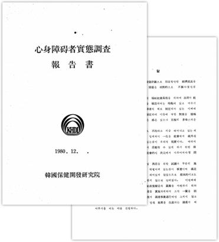

home > 연구 역사 > 정책과 연구
정책과 연구Policy and Research
장애인복지는 장애인에게 생계, 의료, 주거, 고용 등 사회보장을 제공하는 것뿐만 아니라 차별금지, 기회의 균등, 개인의 자율성과 자립에 대한 존중을 포함하여 모든 인권과 기본적인 자유를 완전하고
동등하게 향유하도록 지원하는 국가 및 사회의 모든 노력을 포함합니다.
- 정책 발전
- 한국보건사회 연구원
- 정책발전을 이끈 역사적 사건
-
1979
-
1980
-
· 최초의 전국 단위 과학적 실태조사인
‘심신장애자 실태조사’실시1981
· ‘심신장애자복지법’ 제정·시행
-
1982
· 장애인 보장구(보조기기)교부사업 실시
· 장애인 취업알선사업 실시
(한국장애자재활협회) -
1983
-
1984
-
· 1984년 서울 장애인
1985
· 장애인복지시설 현대화 사업 추진
-
1986
-
1987
- 장애인에 대한 분리 보호 실시
- 장애정책 도입
심신장애자실태조사 보고서
-
제목
심신장애자실태조사 보고서 -
저자
한국보건개발연구원 -
발행년도
1980 -
발행기관
한국보건개발연구원
목차
- 제1편 조사의 배경
- 1. 서 언
- 2. 우리나라에서의 심신장애자실태조사
- 3. 조사의 목적
- 제2편 조사방법
- 1. 표본의 설계 및 추출
- 2. 현지조사의 조직 및 절차
- 제3편 심신장애의 정의 및 범위
- 1. 서 언
- 2. 정신박약
- 3. 정신장애
- 4. 지체장애
- 5. 중증심신장애
- ...
